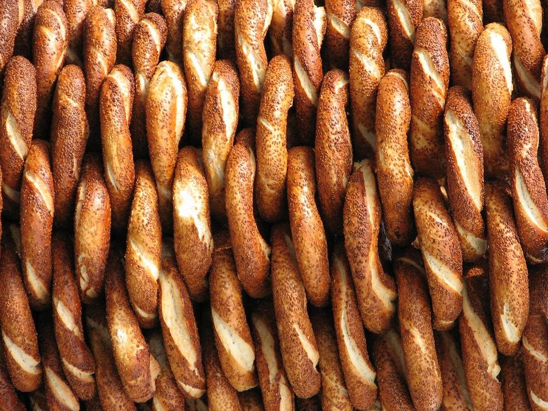

Sabah 05.00 – 11.00
İşe, okula, vapura yetişirken en hızlı kahvaltı. Simidi kese kâğıdında alın, çayı gittiğiniz yerde demlersiniz.
- Simit ve demli çay
- Yanına beyaz peynir, domates, salatalık
- Beslenme çantasına sade poğaça
Kadıköy Hasanpaşa'da taş fırın simit, poğaça, açma ve börek. Sabahın köründe de, gece yarısından sonra da fırının ışığı yanıyor.
Google'da 4,2 puan, 280 değerlendirme
Halkanın çevresindeki köz, İstanbul saatini gösterir. Fırına dokunun, köz canlansın.
Bir simit fırınından beklediğiniz ne varsa: halkası, yumuşağı, katmerlisi. Çeşitlere bakın, o gün ne olduğunu tek mesajla sorun.
Fırın haftanın yedi günü, günün yirmi dört saati açık. Hangi saatte ne iyi gider, kısaca şöyle:
İşe, okula, vapura yetişirken en hızlı kahvaltı. Simidi kese kâğıdında alın, çayı gittiğiniz yerde demlersiniz.
Öğle arasında börek doyurur, açma tatlı niyetine gider. Ekibe götürecekseniz adedi hesaplayıcıyla çıkarın.
İkindi çayına misafir gelecekse açma ve poğaça işinizi görür. Eve dönerken ertesi sabahın simidini de düşünün.
Nöbetten çıkanlar, yola koyulanlar, ders başından kalkanlar için. Şehir uykudayken de fırının kapısı açık.

Taş fırın simidini ayıran şey, hamurun tepsiye değil doğrudan sıcak taş tabana oturmasıdır. Alt kabuk çabuk tutar, içi yumuşak kalır.
Kaç kişi olduğunuzu yazın, kaç parça gerektiğini görün. İsterseniz çeşitlere bölüp siparişinizi WhatsApp'a tek dokunuşla aktarın.
4,2/ 5
Fırın hakkında yazılanların tamamını, olduğu gibi Google'da okuyabilirsiniz. Uğradıysanız siz de birkaç satır bırakın.
Google yorumlarını açınHasanpaşa'dayız. Yol tarifi düğmesi, bulunduğunuz yerden fırının kapısına kadar rotayı Google Haritalar'da açar.